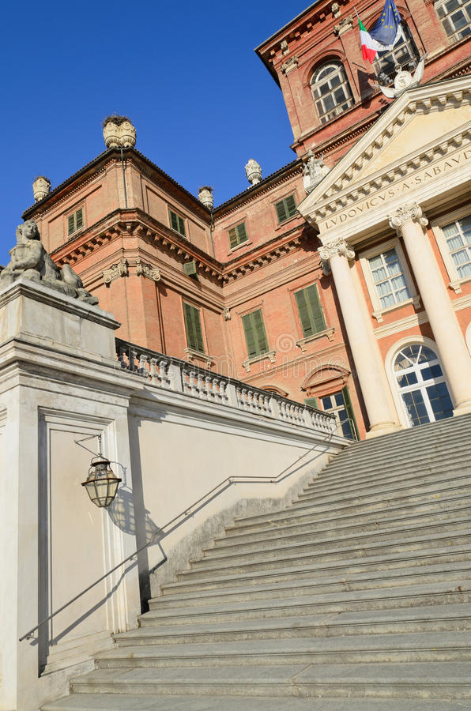

il castello Reale di Racconigi
- Home
- Il parco
Castello Reale di Racconigi
Il castello reale di Racconigi è situato a
Roccanigi, in
provincia di Cuneo ma poco distante da Torino.

Nel corso della sua quasi millenaria storia ha visto numerosi
rimaneggiamenti e divenne di proprietà dei Savoia a partire
dalla metà XIV secolo. In seguito su residenza ufficiale del
ramo dei Savoia-Corigniano e successivamente fu eletto sede
dei "reali villeggiature" della famiglia reale dei re di
Sardegna (e poi d'Italia) nei mesi estivi e autunnali.
Storia
Sono note le seguenti notizie sulla storia del castello:
-
La fortificazione crescente a Racconigi risale al XI secolo, epoca in cui il territorio era
parte della Marca di Torino e dove Bernardino di Susa edificò o riadattò un'antica
caseforse, sui resti di un precedente monastero. -
Nel 1091, alla morte della marchesa Adelaide di Susa, i territori furono occupati dal
nipote Bonificio del Vasto e il feudo del Roccanigi entrò quindi a far parte dei
possedimenti dei marchesi di Saluzzo.
La trasformazione neoclassica (XVIII secolo)
A partire dal 1757 Ludovico Luigi Vittorio di Corignano commissionò all'architetto
Giovanni Battita un notevole rimaneggiamento secondo il gusto neoclassico tipico dell'
epoca, a cui si deve il rifacimento dela facciata meridionale con l'aggiunto del pròtiro
tetrastilo con colonne corinzie sormontate dal frontone triangolare dentellato di
ispirazione palladiana.
Gi interventi interni, invece, interessano il Salone d'Ercole, l'attigua Sala di Diana
e l'allestimento delle stanze dell'Appartamento Cinese, decorate con preziose carte da
parati in carta di riso.
Interni del castello
| Nome dell'interno | Descrizione |
| Il salone d'Ercole | Dedicato al mito di Ercole, questo ambiente è il frutto dell'intervento del 1757 ad opera dell'architetto Giovanni Battita Borra. |
| La sala di Diana | Utilizzata come atrio di ingresso alla residenza, la sala di Diana è caratterizzata dai quattro grandi medaglioni che raffigurano il mito della dea della caccia. |
| L'Appartamento Cinese | La sala dell'Appartamento Cinese facevano parte di un più ampio spazio nominato foresterie reale. |